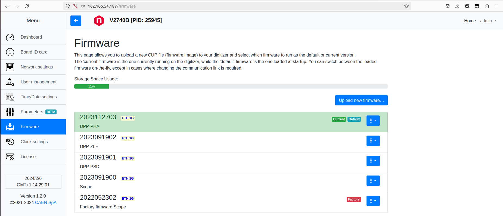

固件¶
最新固件¶
- 2745
V2745-scope-1G-2023091900.cup
V2745-dpp-pha-1G-2023112703.cup
V2745-dpp-psd-1G-2023091901.cup
V2745-dpp-zle-1G-2023091902.cup
- 2740
V2740-scope-1G-2023091900.cup
V2740-dpp-pha-1G-2023112703.cup
V2740-dpp-psd-1G-2023091901.cup
V2740-dpp-zle-1G-2023091902.cup
- 2730
V2730-scope-1G-2023111400.cup
固件更新¶
通过 USB （CAENDGTZ-USB-{PIDNUMBER}）或者 IP 方式访问模块配置页面，在左侧菜单栏有个 Fireware，点击进入该页面，如下：
检查该页面的 Scope/PHA/PSD/ZLE 固件版本与获取程序包中， firmware 文件夹内的是否一致，如果不一致，通过 “Upload new firmware” 上传新固件。 网页中每个固件右端均有一个蓝色下三角按钮，通过点击该按钮，可以进行当前使用的固件进行切换，设置开机默认加载的固件等。另外，及时删除老版本的固件。